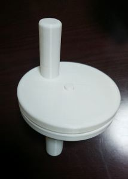
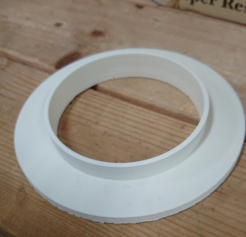
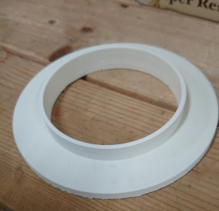
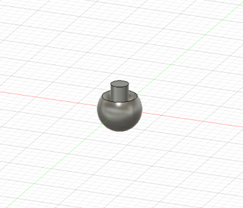

3年 11月
-目次-
10/29-11/4
11/5-11/11
11/12-11/18
11/19-11/25
11/26-12/2
-10/29-11/4-
先生と相談して少しテーマの方向性を変えた
親にインタビュー
－どんなおもちゃで遊んでいたかー
・紙で作ったおもちゃ
・磁石でくっつくおもちゃ
・形をはめるおもちゃ
・レゴ
・電話など多様な仕組みがついているもの
・コップの積み木
・絵や粘土
・絵をそろえるおもちゃ
・ぬいぐるみ
実家近くのトイザらスで似たような商品の写真を撮ってきた
-好きな遊びー
外で遊んだり、教育番組などを見るほうがおもちゃより好きだった
3.4才になってくると、木登りや、泥団子づくり、ブランコ、お絵かき、おままごとなどといった集団遊びが多かった
-木製のおもちゃについてー
幼稚園児ぐらいの年齢にならないとおもちゃを投げたりするので怖かった
-祖母の考えー
おもちゃの役割は子供がちゃんと目が見えるか、耳が聞こえるか、体はちゃんと動かせるかなどの健康チェックの役割を持っていた
―おまけー
母の同僚のお孫さんは2歳児ではっきりしゃべれるのはご飯と家族を呼ぶ言葉とyoutubeらしく、youtubeではおもちゃで遊んでいる動画を見ているらしい
インタビューをしてみて
おもちゃについては覚えていないことが多かったので改めて聞いてみると、様々なおもちゃで遊んでいたことが分かった
祖母が言っていたおもちゃには健康チェックの役割があるというのを聞いて、
知育という言葉はマーケティングを行うにあたってちょうどいい言葉だったのではないかと考えた
次回は実際におもちゃを作ってみる
-11/5-11/11-
自分が昔遊んで面白かったおもちゃなどを参考におもちゃ作りをしていく
1.ビュンビュンゴマ

紙を使った手作りのおもちゃとして遊んでいたが、当時から立体的なもの（面白い形）でもできないかと思い作ってみたが、
まわしてみると紐が平等にねじれなく、うまく回らなかった
穴の位置の調整が必要
一度紙で作ってみてサイズの確認を行う必要がある
2.ぐるぐる回すだけのおもちゃ

棒をさして回すだけのおもちゃだが、真ん中の棒がきれいに出力できなかったため、２つがばらばらに分かれてしまう
自分の経験上、同じ動作を繰り返すのが楽しかった記憶があるため、無限に回せるものを作った
回すとき上の面と下の面がこすれてザリザリとした音が出ており面白いと感じた
-11/12-11/18-
活動なし
-11/19-11/25-
1.輪投げ


ペットボトルの飲み物をよく買うが、なにの意味もなく捨てられてしまうのを見て、
子供が遊ぶおもちゃに転換ができないかと考え、デザインした
支えの中にペットボトルをはめ込み、簡易的な輪投げを作ろうとした
子供向けだけではなく、文化祭やイベントなどでも手軽に準備できるのではないかと考えた
 

2.手回しコマ



伝統的なおもちゃとしてコマを思いついたので、データを作成した。
一般的なコマは紐を括り付けるものだが、できる限り必要な道具は少なくしようと思い、手回しにした
Ultimakerとダヴィンチミニで出力してみたが、二つとも球体部分のサポートがきれいに外れずに、汚くなってしまった
Ultimakerのほうはやすりで削れば少しはきれいになるが、手間になってしまうため、やすりをかけないような形にすることが必要である
-11/26-12/2-
1.卵型の小物入れ


卵の形をした小物入れだが、中に鈴か何かを入れてガラガラのような役割や、卵の形だと不規則な方向に転がるので、それも楽しめ、
遊び終わった後にまた活用できるのではないかと考えた
出力してみて、手回しゴマと同じように曲面がきれいに出力できていなかったことと、はめ込みの棒が折れやすくなっていたので、違う構造にする必要がある